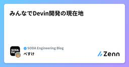
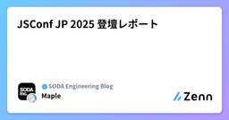

SODA Engineering Blogのフィード
https://zenn.dev/p/team_soda
株式会社SODAの開発組織がお届けするZenn Publicationです。 是非Entrance Bookもご覧ください！ → https://recruit.soda-inc.jp/engineer
フィード

みんなでDevin開発の現在地 2
2
SODA Engineering Blogのフィード
はじめに弊社ではカスタマーサポート、ロジスティクス、メディアなど開発部署以外のメンバーがDevinを活用してプロダクト開発を行っている点が特徴です。この記事では実施している開発フロー、実績と現時点での限界と課題、過去の課題を説明します。 Devinを用いた開発フロー開発フローはシンプルで、以下の手順に沿って進めています。各工程を説明します。 1. PRDの作成各部署のメンバーがPRD(Product Requirements Document)[1]を作成します。PRD作成はDevinのAsk Devinという機能を使用して行っています。PRD作成までの簡易的な...
3日前

JSConf JP 2025 登壇レポート 1
SODA Engineering Blogのフィード
こんにちは。Frontend Rebirth（フロントエンドを再構築していく） チームの Maple です。先日開催された JSConf JP 2025 にて、「モダンJSフレームワークのビルドプロセス 〜なぜReactは503行、Svelteは12行なのか〜」というタイトルで登壇させていただきました！この記事では、発表内容のハイライトと、登壇を通じて感じたことや学びを共有させていただきます。 登壇情報https://jsconf.jp/2025/en/talks/modern-js-framework-build-process 発表資料 発表内容今回の発表では、...
5日前

SNKRDUNKにおける機械学習への取り組みの現状と今後の展望
SODA Engineering Blogのフィード
はじめに株式会社SODAでバックエンドのテックリードをしている仲宗根です。SODAは、SNKRDUNKというスニーカーやアパレル、トレーディングカード(トレカ)のフリマサービスを運営しています。本記事では、SNKRDUNKにおける機械学習プロジェクトの一例として、ピックアップリンクのパーソナライズを紹介します。この取り組みを通して、SNKRDUNKの開発に興味を持っていただければ幸いです。 ピックアップリンクとはピックアップリンクとは、SNKRDUNKアプリのおすすめタブの上部に配置された特定のカテゴリーやブランドごとにまとめられた商品へのリンクのことです（図1）。リン...
20日前
ブランチごとにDEV環境を動的生成！ALB で実現するプレビュー環境
SODA Engineering Blogのフィード
はじめにこんにちは。Frontend Rebirth（フロントエンドを再構築していく） チームの Maple です。開発チームで「DEV環境が1つしかない」という状況、経験ありませんか？私たちのチームでは、複数の機能を並行開発する中で、単一のDEV環境を共有していたことによる様々な問題に直面していました。!本記事では、この課題をAWS ALBのListener Rules、ECS、GitHub Actionsを組み合わせることで解決し、ブランチごとに独立したDEV環境を動的に構築する仕組みを実現した事例を紹介します。!現状は以下の記事などで記載しているリプレイス後の新...
1ヶ月前
Go Conference 2025 参加レポート - Go言語の最新トレンドを体感してきた2日間
SODA Engineering Blogのフィード
はじめに2025年9月27日と28日の2日間、東京・渋谷のAbema Towersで開催されたGo Conference 2025に参加してきました！SODAはシルバースポンサーとして、協賛しているので、ブース出展のメンバーが入場できるのですが、そのメンバーは2名のみ入場できるとのことなので、お手伝いとして入場するkazuと22skyyは一般のチケットで入場することになりました！スポンサーとしての出展についてはこちらの記事で書かれているので、今回は、kazuと22skyyの二人がスポンサーブースのお手伝いの合間に参加してきたワークショップとセッションについて、書いていこうと...
1ヶ月前
より良いユーザー体験を求めて "モーダル" を深掘る
SODA Engineering Blogのフィード
モーダルと聞いてどんなUIを想像しますか?iOSを使ってる人はこのようなUIを想像するのではないでしょうか。(iOS26では見た目が変わりましたね)実はモーダルというUIコンポーネントは存在しません。このようなUIはHIGではシートと呼んでいます。では「モーダル」は本来どう言う時に使えば良いのでしょうか?この記事ではモーダルが表すUIについて種類や実装方法などを深掘り、より良いユーザー体験を実現する方法を見ていきます。読者対象は、Flutterエンジニアはもちろん、モバイルエンジニア全般やFデザイナーにも読んでもらいたいです。 モーダルとは「モーダル」というのは、ユー...
2ヶ月前
Go Conference 2025でLT登壇してきました！
SODA Engineering Blogのフィード
こんにちは。SODAのmagavelです。先日(9/27〜28)開催されたGo Conference 2025で登壇の機会をいただき、LTスピーカーとして参加してきたので、発表内容の振り返りと感想を書いておこうと思います！ weak pointerについて話しましたhttps://gocon.jp/2025/talks/959089/LTではGo1.24で追加されたweakパッケージについて、weak pointerの概念から使い所、導入の背景を中心に、実際の使用例を少し交えて発表させていただきました。聞き手は↓のような方々を想定しつつ、weak pointerの概念を...
2ヶ月前
Unity（C#）からFlutterに転向してハマった落とし穴 ~Flutter開発で気にしなくていい3つのこと~
SODA Engineering Blogのフィード
こんにちは。株式会社SODAでFlutterエンジニアをしているTPと申します。私は前職までUnityエンジニアをしており、Flutter歴は独学の時期も含めると3年ほどになります。今回は、Unityエンジニアだった私がFlutterを学ぶにあたってハマった落とし穴を紹介します。特に、他の開発プラットフォームにすでに習熟していたからこそハマってしまった点を紹介していきます。私と同じように、Flutter以外の開発プラットフォームから転向してくる方々の参考になれば幸いです。また、他のプラットフォームの事情も知りたい方や、Flutterのエコシステムを支えている概念に興味がある方にとって...
2ヶ月前
AIによる商品説明文生成：よい商品説明文とは何か？
SODA Engineering Blogのフィード
背景弊社（ECサイト）には商品の説明文がないので入れたいキャッチコピーを見せたい曖昧検索をしたいそこで、AIによる商品説明文生成をやってみる LLM/VLMによる商品説明文生成説明文生成のインプットを何にするか？→下記の3つでそれぞれやってみる商品名から生成（＝モデルの知識だけで生成）商品画像から生成Web検索結果から生成 この商品で説明文生成をする 1. 商品名から生成（＝モデルの知識から生成）ASICS Gel-Lyte III “Dragon Fruit” は、南国フルーツを思わせる鮮やかなカラーリングが魅力の一足。鮮烈なピンクとグリーン...
2ヶ月前
Findy LT フロントエンド開発の現在地-PoCの壁を越える AIフレンドリーな開発の挑戦- 登壇レポート
SODA Engineering Blogのフィード
はじめにこんにちは。Frontend Rebirth（フロントエンドを再構築していく） チームの Maple です。先日、Findyさん主催のLTイベント「フロントエンド開発の現在地-PoCの壁を越える AIフレンドリーな開発の挑戦-」で登壇させていただきました！直近FRチームでは、AI Agent（Claude Code × tmux）を活用して検索機能のリプレイスを行い、当初見積もり4ヶ月の開発期間を2ヶ月に短縮することに成功しました。今回はその取り組みについて発表させていただきました。この記事では、発表内容のハイライトと当日の雰囲気、そして個人的な学びや感想をシェアさせ...
2ヶ月前
Chrome DevToolsのRecorderで“最も簡単な自動化”を試そう
SODA Engineering Blogのフィード
こんにちは、SODAでクオリティエンジニアをしているokauchiです。今回は、最も簡単な自動化というテーマです。ChromeのRecorderタブを利用すれば、Chromeだけで誰にでも自動化を利用ができ、導入コストはゼロと言っても言い過ぎではなさそうです。 自動化の最初の一歩にぴったり「自動化をやってみたいけど、ツールの準備や設定が大変そう」──そんな声をよく耳にします。確かにE2Eテストツールを導入しようとすると、環境構築やログイン処理の組み込みなど、意外とハードルが高いものです。でも実は、もっと簡単に自動化を試せる方法があります。ChromeのDeveloper Too...
2ヶ月前
これからは「やり方を教えて」にしていこう
SODA Engineering Blogのフィード
こんにちは、SODAでクオリティエンジニアをしているokauchiです。今回は、技術にもっと踏み込んでトラブルに強くなろうというテーマです。原理を知っていくことで自分が取れる手段も増え、結果的にトラブルに強いテストプロセスになっていきますね。 テストデータ準備はUIだけじゃないテストをしていると、事前に必要なテストデータを準備する場面が必ず出てきます。ユーザー登録をしたり、商品を追加したり、状態を作り込んだり。多くの場合、これをUIから地道に操作して行っている人は少なくないと思います。通常の手動テスト数件だったらまだしも、リグレッションテストなどのテストケース数の多いテストな...
2ヶ月前
今一番修正しやすいテストコード教えて
SODA Engineering Blogのフィード
こんにちは！SODAでQuality Engineerをしているmachiです。今回はAI agent（以下、AI）と一緒にテストコードを改善していく一歩目のハードルを限りなく下げた話をしてみようと思います。 AIからはじまる波SODAではCursor、ClaudeCodeなどのAIを積極的に活用していこう！という方針で開発しています。スクラムチームに所属するQuality Engineer（以下、QE）も例外なくこの波に乗る必要があります。社内外問わずAI活用事例は様々あり、プラクティスが発表されては廃れていくサイクルが繰り返されています。そんなAI駆動開発といえる変化の早...
3ヶ月前
Slackの名前からE2Eテストを広めてみよう
SODA Engineering Blogのフィード
こんにちは、SODAでクオリティエンジニアをしているokauchiです。今回は、E2Eテストの認知をユニークなアプローチで組織に広げたというテーマです。コミュニケーションツールは普段から目にする機会も多く、そこに小さな変化を入れるだけでも興味を持ってもらえることにつながります。 レベルをつけてゲーム感覚にテスト自動化に興味を持ってもらうために、ちょっとした遊び心を取り入れてみました。Slackの自分の名前の横に「Lv.◯」とレベル表示をつけてみた感じです。RPGのような成長を数値で見れるようになってちょっと気になりませんか？どのタイミングでレベルが上がるかというと、E2Eテスト...
3ヶ月前
QAエンジニアの成果は見せないと見えない
SODA Engineering Blogのフィード
こんにちは、SODAでクオリティエンジニアをしているokauchiです。今回は、QAエンジニアの成果を見せないと見えないというテーマです。手を動かしている自分はわかっていても、見せないと見えない。自分達の活動がプロダクトの品質であったり、サービスの品質に貢献していることを伝えていく必要があるという話です。 可視化されにくいQAの仕事QAエンジニアの仕事は、どうしても「見えにくい」ものになりがちです。不具合を見つけたり、品質課題を早めに指摘したり、プロセス上の改善を促したり。実際には多くの時間と工夫を注いでいるのに、コードのように直接的に「ここを作った」と示せるものではありません...
3ヶ月前
HITCON 2025 参加記
SODA Engineering Blogのフィード
プロダクトセキュリティチームの小竹です。普段は炭酸水（ソーダ）を飲んで忠誠心を示しながらセキュリティのお仕事をしています。先日、台湾で開催されたセキュリティカンファレンス「HITCON 2025」に参加しました。本記事ではHITCON 2025の会場の様子や印象に残った発表を紹介します。https://hitcon.org/2025/en-US/ HITCONとはHITCONは台湾で毎年開催されている歴史あるセキュリティカンファレンスです。中央研究院という台湾の最高学術研究機関で開催されました。メインのカンファレンス以外にも毎年いろんなイベントが開催されており、今年はCTFやH...
3ヶ月前
まずは“自分が嬉しい”アウトプットでいい
SODA Engineering Blogのフィード
こんにちは、SODAでクオリティエンジニアをしているokauchiです。今回は先週社内で行ったオフライン勉強会で発表したテーマをブログに起こしてみました。フリーテーマのLT会だったので、最近ようやく習慣化できてきたブログでのアウトプットについて話しました。テーマはシンプルに「もっと気軽にアウトプットしてみよう」です。 アウトプットは思ったより怖くないアウトプットを始める前って、いろいろ不安が浮かんできますよね。「これ誰かに突っ込まれないかな」「間違ってたら恥ずかしい」「炎上したらどうしよう」などなど。考えれば考えるほどさまざまなリスクが浮かんできて、腰が重くなってしまいますね...
3ヶ月前
ECサイトの購入・決済システムのステップアップガイド（脱初級レベル）
SODA Engineering Blogのフィード
背景弊社(SNKRDUNK)の購入機能では、新機能追加が続き複雑度が高まり手に負えなくなりつつある。これは弊社に限らずECサイトではよくある悩みであろうので、本稿では、購入システムを1段階ステップアップさせる設計について議論する。特に購入時の決済処理についてフォーカスする。 (1) 購入&決済処理の一貫性を守る現状、購入決済処理の一貫性の担保が曖昧であり、不整合が発生したり、例外時に複雑な補償トランザクションを実行したりしている。一貫性を守るための基本設計を考察したい。 全体図 詳細説明 トランザクションを2フェーズに分ける1st: 商品を在庫確保す...
3ヶ月前
続・動画をインプットに不具合再現手順を生成AIに書いてもらおう
SODA Engineering Blogのフィード
こんにちは、SODAでクオリティエンジニアをしているokauchiです。今回は以前記事にした不具合再現手順を生成AIの力を借りて楽に書こうを実際にやってみた結果をシェアします。試作段階のプロンプトでのトライアルでしたが、やってみることで「想定と違ったこと」や「改善の余地」が多く見えてきました。 実際にやってみて見えてきたこと直近で検出した不具合20件弱を対象に、動画から手順の文字起こしを試みました。その際、動画が長くならないように「どの画面から読み取るか」をあらかじめ指定するなど、小さな工夫を入れています。率直に言うと、作業時間は通常の1.5倍ほどかかりました。慣れれば改善でき...
3ヶ月前
いまさら聞けないバグタスクのステータス管理
SODA Engineering Blogのフィード
こんにちは、SODAでクオリティエンジニアをしているokauchiです。今回は、バグタスクのステータス管理について、自分なりに整理してみました。普段の業務の中で、バグの進捗をどう管理するか、どのようにチームで共有するかは、意外と悩ましいポイントです。そこで、バグタスクのステータスをどう整理すれば良いのか、自分の中で考えたことをまとめてみました。 ステータス管理のフローまず、バグタスクがどのように進行するのかを視覚的に整理してみました。以下のような流れです。このフロー図では、バグタスクがどのようにステータスが変化するのかが視覚的に示されています。実際にはここまで細かいステータス管...
4ヶ月前